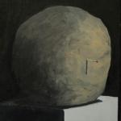

Music Reviews
-
DJ Shadow The Less You Know, The Better
DJ Shadow's first album in five years is an absurdly varied record - although for all the styles Shadow touches upon, disappointingly little of it really satisfies.
Stephen Wragg reviews... -

The Caretaker An Empty Bliss Beyond This World
The Caretaker's newest release is ghost-friendly and waltz-able, too.
Michael Iovino reviews... -
Andy Stott Passed Me By
The Mancunian dubstepper's newest release is a menacing work of primitive sublimity.
Michael Iovino reviews... -
Spectrals Bad Penny
After generating a fair bit of buzz with his promising EP, Extended Play, the Leeds-based one-man band releases his debut full length of pop-leaning classic rock.
Juan Edgardo Rodríguez sips a cocktail... -
Steve Reich WTC 9/11
Mr. Reich's new composition suffocates under it's very own disjunctiveness.
Michael Iovino reviews... -
Russian Circles Empros
The fourth release by Chicago post-rock band Russian Circles, Empros is what Explosions In The Sky might sound like if they started listening to Neurosis. (Yeah, it’s that cool.)
Sean Caldwell reviews... -

Real Estate Days
The New Jersey-based indie band returns with a follow-up to their successful self-titled debut. Will they build upon or that foundation, or is Days destined to be a tear down?
Benjamin Jones appraises Real Estate -

Jane's Addiction The Great Escape Artist
Whether it's old Jane's or new Jane's the Addiction is still there. But it's waning.
Luredo Marbery likes but wishes for more of... -
Tom Waits Bad As Me
Returning with his first album of brand new songs in seven years, Tom Waits delivers an set that just may be his best ever.
David John Wood is bowled over... -
Justice Audio, Video, Disco
I hear, I see, I learn. I partyyyyy. Does the follow-up to Cross live up to expectations?
Craig Stevens is hearing, seeing, learning...